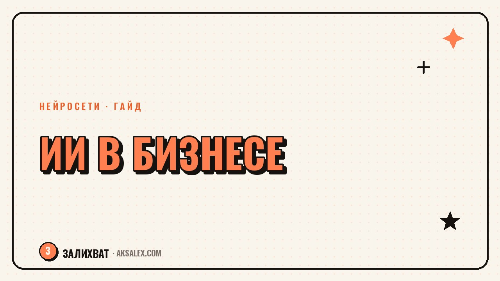

Нейросети для бизнеса: с чего начать

Предприниматель не обязан разбираться в технологиях, чтобы нейросети приносили пользу бизнесу. Достаточно начать с одной понятной задачи - переписки, поста в соцсети или сведения отчёта - и постепенно расширять список. Разберём, с чего стартовать и какие инструменты не потребуют отдельного бюджета на внедрение.
Три зоны, где нейросеть пригодится в первую очередь
У любого бизнеса, от кофейни до консалтинга, есть три повторяющихся типа задач: рутинная переписка и документы, контент для продвижения, обработка цифр. Нейросеть не заменяет решения предпринимателя, но забирает черновую часть работы в каждой из этих зон.
Не стоит сразу пытаться внедрить ИИ везде - это заканчивается разочарованием и брошенной затеей. Правильный путь - выбрать одну задачу, которая отнимает больше всего времени именно у тебя, и закрыть её нейросетью в первую очередь.
С чего чаще всего начинают предприниматели
- Ответы клиентам и черновики деловых писем
- Тексты для соцсетей и карточек товара
- Сведение расходов и первичный анализ продаж
- Планирование задач и составление регламентов
Рутина: переписка, документы, регламенты
Самый быстрый эффект даёт делегирование переписки. ChatGPT, Claude, GigaChat и YandexGPT одинаково хорошо пишут черновик ответа клиенту, если дать им контекст: кто спрашивает, о чём был диалог, какой нужен тон.
Рабочий промпт для ответа клиенту
Пример: 'Клиент пишет, что заказ пришёл с опозданием на три дня и просит скидку. Напиши вежливый ответ с извинением, предложи скидку 10 процентов на следующий заказ, тон дружелюбный, без канцелярита'. Чем конкретнее вводные, тем меньше правок потом.
- Регламенты и инструкции для сотрудников - из голосовой заметки в структурированный текст
- Сведение переписки в короткое резюме перед звонком
- Черновики договоров и приложений по шаблону
Маркетинг: тексты, картинки, контент-план
Вторая зона - продвижение. Нейросети пишут посты, драфты рассылок и описания товаров, а сервисы вроде Midjourney или встроенных генераторов картинок в Canva закрывают визуал без найма дизайнера на каждую мелочь.
Контент-план на месяц тоже реально собрать за один вечер: дать нейросети описание бизнеса, целевую аудиторию и три-четыре главных повода для постов, а дальше попросить разложить это на календарь с темами.
Нейросеть не придумает продукт за тебя, но упаковать то, что ты уже делаешь, в понятный текст - её родная задача.
Аналитика: цифры, отчёты, прогнозы
Нейросети умеют объяснять таблицы человеческим языком: загрузи выгрузку продаж и попроси найти, какой товар просел за месяц или в какие дни выручка стабильно выше. Это не заменяет аналитика, но экономит время на первом проходе по данным.
Важная оговорка: нейросеть может ошибиться в арифметике на больших таблицах, особенно если делает вычисления в уме, а не через формулу. Итоговые цифры для отчётности всегда стоит перепроверять, а не копировать напрямую.
Сравнение инструментов и порядок внедрения
Ниже - сервисы, с которых удобно начать, без сложной настройки и с бесплатным уровнем доступа для старта.
| Задача | Инструмент | Что даёт бесплатно |
|---|---|---|
| Переписка и тексты | ChatGPT, GigaChat | черновики без ограничения по теме |
| Контент-план | Claude, YandexGPT | структура и календарь тем |
| Картинки для постов | Canva с ИИ-генератором | базовые шаблоны и генерация |
| Разбор таблиц с продажами | ChatGPT, Claude | чтение и объяснение выгрузки |
Порядок внедрения по шагам
- Шаг 1: выбери одну задачу, которая отнимает больше всего времени
- Шаг 2: попробуй закрыть её нейросетью в течение недели
- Шаг 3: сохрани рабочие промпты, которые дали хороший результат
- Шаг 4: добавь вторую задачу, когда первая станет привычной
Частые вопросы
Нужны ли технические навыки, чтобы начать использовать нейросети в бизнесе?
Нет, большинство сервисов работают через обычный чат на понятном языке. Технические знания нужны только для более сложной автоматизации, а не для старта.
С какой задачи лучше начать предпринимателю?
С той, что отнимает больше всего времени лично у тебя - чаще всего это переписка с клиентами или тексты для соцсетей. Быстрый результат на понятной задаче мотивирует двигаться дальше.
Можно ли доверять нейросети финансовые расчёты?
Для первого прохода по данным и поиска аномалий - да, это удобно. Но итоговые цифры для отчётности и налогов всегда нужно перепроверять вручную или через формулы.
Сколько стоит внедрение нейросетей в малый бизнес?
На старте можно обойтись бесплатными версиями сервисов - этого достаточно для переписки, текстов и разбора таблиц. Платная подписка нужна, только если объём задач вырос и упёрся в лимиты.
Заменит ли нейросеть маркетолога или бухгалтера?
Нет, она берёт на себя черновую и повторяющуюся работу, но не стратегию и не ответственность за решения. Специалист остаётся нужен, только рутины у него становится меньше.
Раз тема оказалась полезной, вот что почитать следующим. Бесплатные нейросети для юриста: что умеют, а что нет. Обзор с примерами промптов и таблицей сравнения.
Читать статью →а не вручную